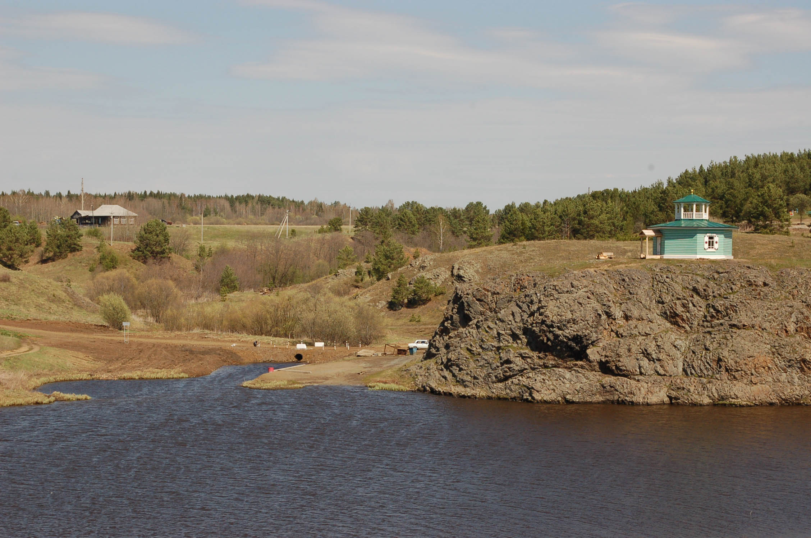
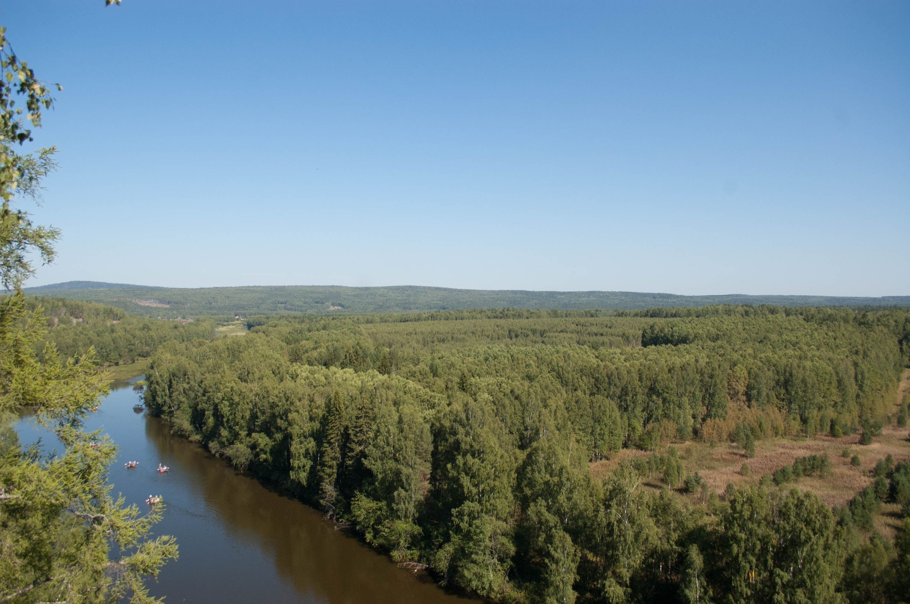

Тюлюк
Челябинская область
Самый высокогорный посёлок южного Урала, из которого можно подняться на Иремель
Перейти


Каменный остров
Свердловская область
Скалы пониже Чертова городища, но и попближе к Екатеринбургу
Перейти


Тальков Камень
Свердловская область
Красивый затопленный карьер в природном парке "Бажовские места"
Перейти